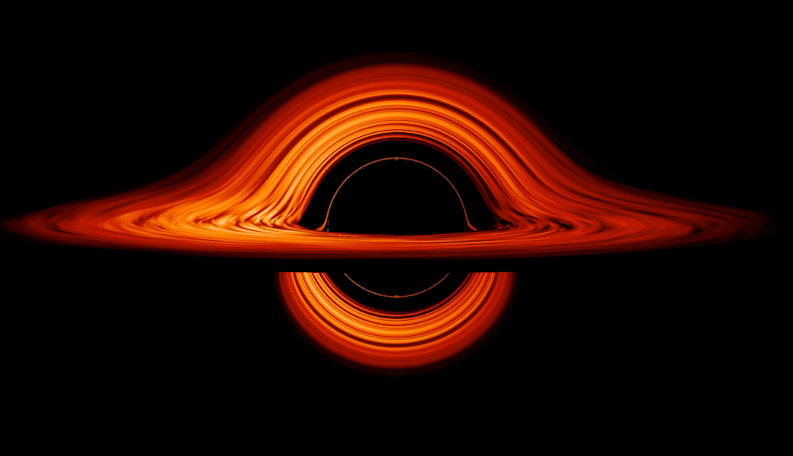
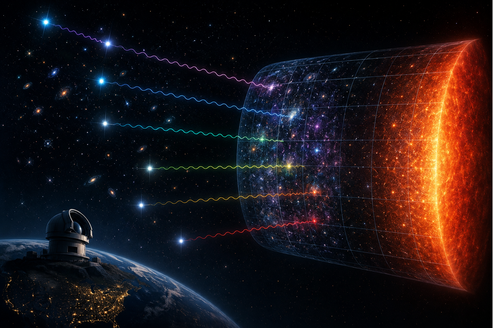
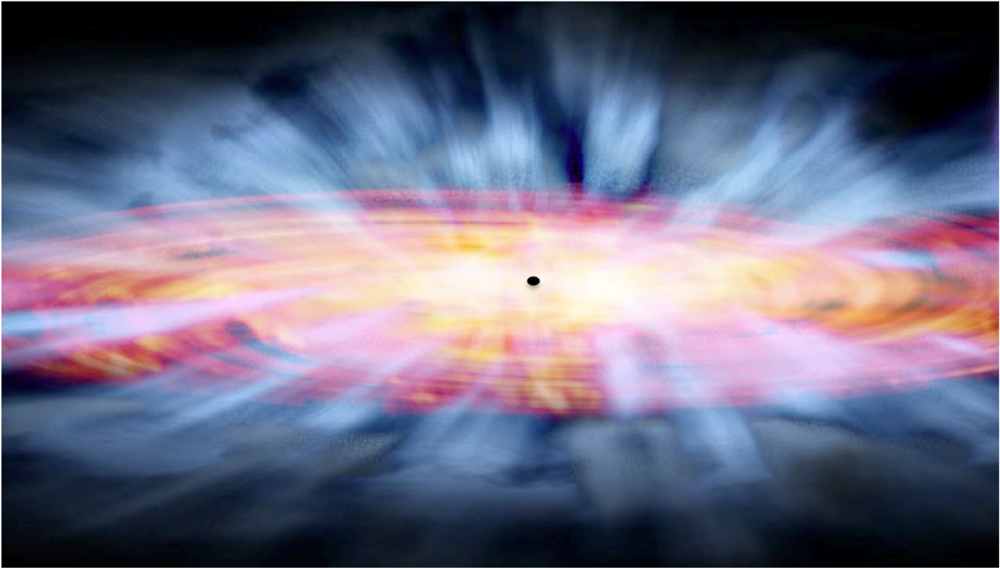
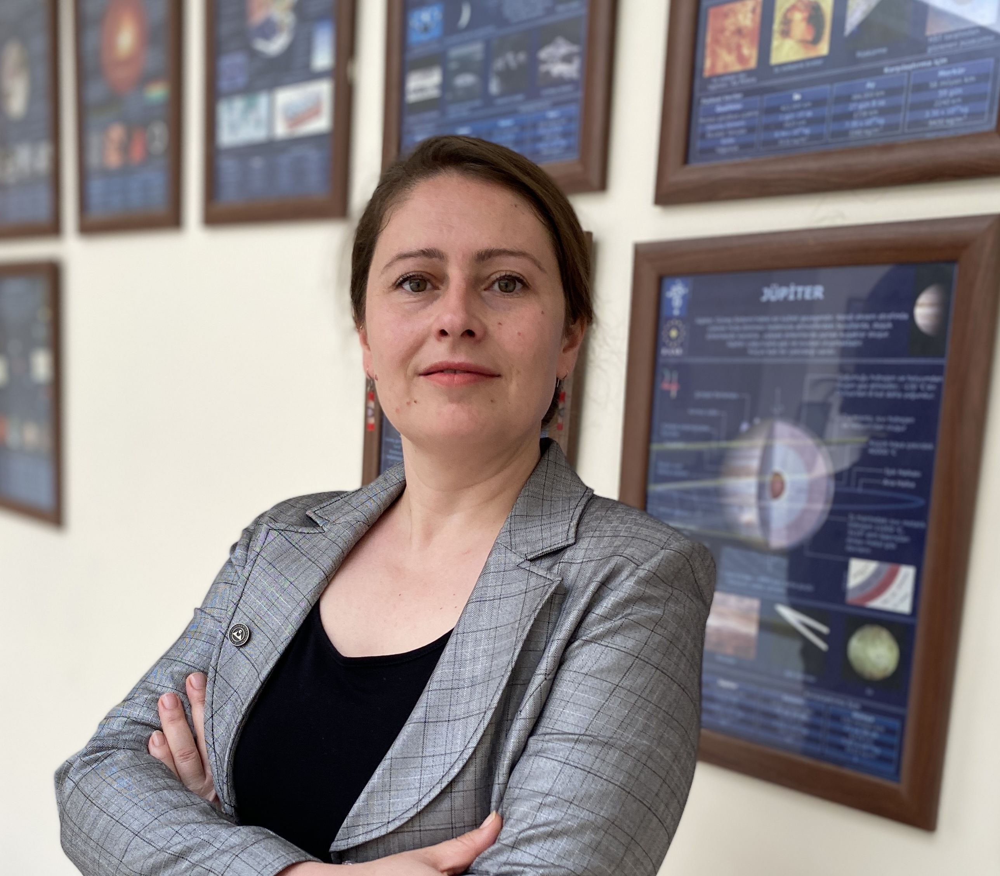
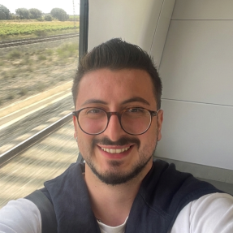
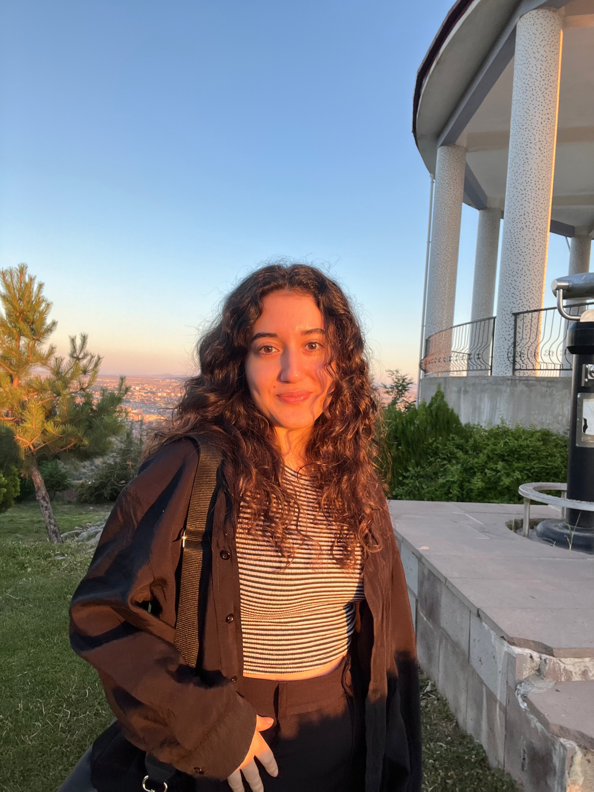
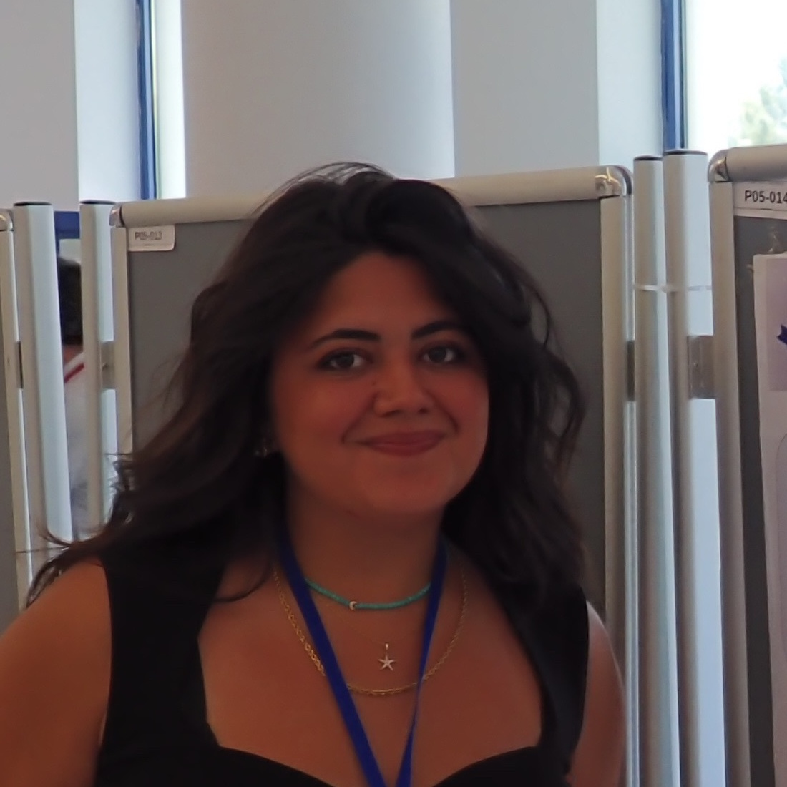

Ulusal Astronomi Kongresi (UAK-2026) kapsamında araştırma grubumuz üyelerinin katkı sunduğu bilimsel çalışmalar, kongrenin e-poster oturumlarında sunulmuştur.
Okumak için tıklayınız →Araştırma grubumuz yüksek lisans öğrencisi Suude Bayram, “LOFAR LoTSS Verileri Kullanılarak Radyo Güçlü Kuazarların Belirlenmesi” başlıklı yüksek lisans tezini 28 Temmuz 2026 tarihinde başarıyla savunmuştur.
Okumak için tıklayınız →Erciyes Üniversitesi AGN Araştırma Grubu olarak aktif galaksi çekirdeklerini (AGN); X-ışını, morötesi, optik, kızılötesi ve radyo dalgaboylarında elde edilen çoklu gözlemlerle inceliyoruz. Bu gözlemlerden elde edilen verileri analiz ederek AGN yapısını, evrimini ve konak galaksileriyle olan etkileşimlerini aydınlatmayı hedefliyoruz. Araştırmalarımızda ileri istatistiksel yöntemler, makine öğrenmesi ve bilimsel yazılım geliştirme tekniklerinden yararlanıyoruz. Çalışmalarımızın temel amacı; süper kütleli kara deliklerin büyüme süreçlerini, galaksi evrimini ve evrendeki yüksek enerjili astrofiziksel sistemleri anlamaktır. XMM-Newton, Chandra, NuSTAR, XRISM, SDSS, LAMOST, LoTSS, RACS ve MeerKAT gibi öncü gözlem verilerini kullanarak aktif galaksi çekirdeklerinin zamansal ve tayfsal yapısını çözümlüyoruz.

AGNverse araştırma grubunun temel amacı; süper kütleli kara deliklerin büyüme süreçlerini, galaksi evrimini ve evrendeki enerjik astrofiziksel sistemleri anlamaktır. Araştırmalarımızda çok dalgaboylu gözlemleri, istatistiksel yöntemleri ve bilimsel yazılım geliştirme tekniklerini bir araya getirerek aktif galaksi çekirdeklerinin ve ekstrem kozmik sistemlerin altında yatan fiziksel mekanizmaları araştırıyoruz. Modern astronominin; gözlemsel veriler, hesaplamalı modelleme ve açık bilim entegrasyonu ile ilerlediğine inanıyoruz.
AGNverse araştırma grubu, aktif galaktik çekirdekler, süper kütleli kara delikler, yüksek enerjili astrofizik ve bilimsel hesaplama alanlarında çalışmalar yürütmektedir.

Araştırma Grubu Lideri
Aktif galaktik çekirdekler, radyo galaksileri ve süper kütleli kara deliklerin evrimi üzerine çalışmalar yürütmektedir.

Araştırmacı / Doktora Öğrencisi
AGN'lerin yapısı ve doğası üzerine; çok dalgaboylu gözlemler ve makine öğrenmesi yöntemleriyle araştırmalar yürütmektedir.

Araştırmacı / Doktora Öğrencisi
Bilimsel programlama, makine öğrenmesi ve astronomik veri analizi üzerine çalışmaktadır.

Araştırmacı / Doktora Öğrencisi
Yüksek enerjili astrofizik ve gözlemsel astronomi alanlarında araştırmalar yapmaktadır.

Araştırmacı / Yüksek Lisans Öğrencisi
Kuazar parlaklık ve kütle fonksiyonları ile süper kütleli kara deliklerin kozmolojik evrimi üzerine araştırmalar yapmaktadır.

Araştırmacı
Yüksek enerjili astrofizik ve gözlemsel astronomi alanlarında araştırmalar yapmaktadır.
Araştırma ekibimizin tamamlanmış ve devam eden yayınları, bilimsel projeleri ve tez çalışmaları doğrultusunda odaklandığımız temel araştırma alanları:
AGN'lerin iç yapısı, evrimi, değişkenlik karakteristikleri, radyo ışınımı, dev radyo kuazarları ve çift süper kütleli kara delik adayları.
Geniş soğurma çizgili kuazarlar (BALQSO), gaz çıkışları, kütle kaybı mekanizmaları ve galaktik ölçekteki geri besleme süreçleri.
Kozmik ölçekteki enerjik astrofiziksel sistemlerin doğasını çözmek için optik, morötesi, X-ışını ve radyo bantlarındaki eşzamanlı gözlemler.
İstatistiksel çıkarım, belirsizlik kestirimi, Bayesyen modelleme ve büyük astronomik veri kümelerinin ileri analizi.
Astronomik gözlemlerin derin sınıflandırması, anomali tespiti, öznitelik çıkarımı ve yapay zeka destekli büyük veri analitiği.
Python, MATLAB ve R ile tekrarlanabilir bilimsel iş akışları, açık kaynaklı astronomi yazılımları ve yüksek başarımlı hesaplama.
Aktif galaksi çekirdekleri, süper kütleli kara delikler ve çok dalgaboylu astrofizik odağında yürütülen araştırma projelerimiz ile uluslararası saygın hakemli dergilerde yayımlanan bilimsel makalelerimiz.
Bilimsel yazılım geliştirme, astrofizik araştırmalarının temel bir bileşenidir. Projelerimiz; astronomik verilerin analizini otomatikleştirmek, araştırma süreçlerini hızlandırmak ve bilimsel sonuçların tekrarlanabilirliğini güvenceye almak üzere tasarlanmıştır. Tayfsal veri indirgeme ve analiz araçları, makine öğrenmesi uygulamaları ve etkileşimli eğitim kaynakları gibi çeşitli yazılımlar üretiyoruz.
TÜBİTAK Ulusal Gözlemevi (TUG) RTT-150 teleskobu TFOSC aygıtı gözlemleri için geliştirilen, otomatik 2D'den 1D'ye tayfsal veri indirgeme ve analiz hattı.
Projeyi İncele →Optik kuazar ve galaksi tayflarında çapraz korelasyon ve emisyon çizgisi modelleme teknikleriyle hassas kırmızıya kayma (redshift) kestirim aracı.
Projeyi İncele →Açık bilim, tekrarlanabilir araştırma ve iş birliğine dayalı öğrenmenin bilimin geleceği için vazgeçilmez olduğuna inanıyoruz. AGNverse araştırma grubu; lisans ve lisansüstü öğrenciler dahil olmak üzere, kurumsal veya bağımsız tüm araştırmacılarla aktif galaksi çekirdekleri, astrofizik ve veri bilimi üzerine ortak projelere ve bilimsel iş birliklerine açıktır.
Astronomi ve ilgili alanlardaki lisans ve lisansüstü öğrenciler için TÜBİTAK 2209 projeleri, bitirme tezleri, Yüksek Lisans ve Doktora tez çalışmaları. Gerçek astronomik veriler ve modern analiz yöntemleriyle araştırmacı yetiştirme ortamı.
Doktora sonrası araştırmacılar ve kariyerinin başındaki bilim insanları için ortak yayınlar, araştırma bursları (MSCA, TÜBİTAK 2218 vb.) desteği ve grubumuzun gözlemsel veri kaynakları ile bağımsız araştırma yürütme imkanları.
Farklı üniversite ve araştırma enstitülerinden akademisyenlerle ortak teleskop gözlem başvuruları (TUG, ESO, Chandra, XMM-Newton vb.), uluslararası veri konsorsiyumları, ortak bilimsel makaleler ve disiplinlerarası araştırma projeleri.
Bilimsel iş birlikleri, lisansüstü öğrenci başvuruları ve akademik araştırmalar için bizimle iletişime geçebilirsiniz.
Grup Lideri
nfak@erciyes.edu.tr
Adres / Bölüm
Astronomi ve Uzay Bilimleri Bölümü
Erciyes Üniversitesi
Kayseri, Türkiye